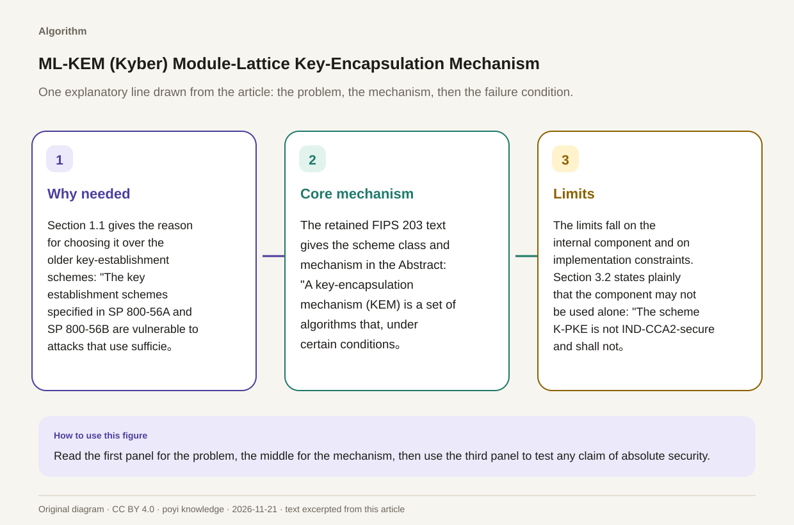
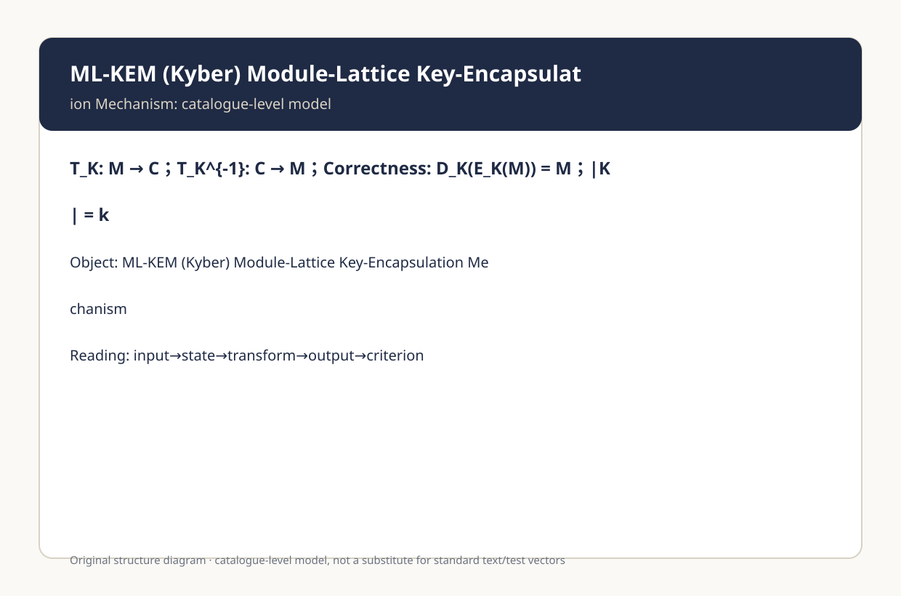

Principles
Algorithm: Kyber;Module-Lattice-Based Key-Encapsulation Mechanism (Kyber / ML-KEM 封装机制). The retained FIPS 203 text gives the scheme class and mechanism in the Abstract: "A key-encapsulation mechanism (KEM) is a set of algorithms that, under certain conditions, can be used by two parties to establish a shared secret key over a public channel." it names the specific KEM the standard sets: "This standard specifies a key-encapsulation mechanism called ML-KEM." and states its security reduction: "The security of ML-KEM is related to the computational difficulty of the Module Learning with Errors problem." The principle is therefore that ML-KEM is a key-encapsulation mechanism built on the hardness of the Module Learning With Errors (MLWE) problem, with the two parties reaching one shared secret by encapsulating and decapsulating over a public channel. Section 3.1 carries a near-identical definition sentence; the abstract is taken as the basis here.

Why it matters
Section 1.1 gives the reason for choosing it over the older key-establishment schemes: "The key establishment schemes specified in SP 800-56A and SP 800-56B are vulnerable to attacks that use sufficiently-capable quantum computers." the factorization and discrete-log based schemes fall to a strong enough quantum computer. The abstract then places ML-KEM: "At present, ML-KEM is believed to be secure, even against adversaries who possess a quantum computer." Read together these are why the mechanism exists — to fill the gap that discrete-log key exchange leaves under quantum computing. The wording is believed, and the file also states in the announcement clause that it will formally reevaluate every five years, so this quantum resistance is a present-day assessment, not a proven fact, and is not escalated into an unconditional guarantee.
Applications
The use is bounded by the parameter sets and by the achieved security notion. The abstract lists three: "This standard specifies three parameter sets for ML-KEM. In order of increasing security strength and decreasing performance, these are ML-KEM-512, ML-KEM-768, and ML-KEM-1024." Section 3.2 states the attack model reached after the FO transform: "As a result, ML-KEM is believed to satisfy so-called IND-CCA2 security" that is, chosen-ciphertext security. Together the two sentences give the picture: ML-KEM trades security against performance across the 512/768/1024 tiers and is used as a key-encapsulation whose shared secret stays hidden from unauthorised parties under a CCA2 model. The strength ordering is a descriptive ranking, and elsewhere (§1.1) the file says all three sets are approved to protect sensitive non-classified federal communications; the wording remains believed, so no proven claim is made.

Limits & attacks
The limits fall on the internal component and on implementation constraints. Section 3.2 states plainly that the component may not be used alone: "The scheme K-PKE is not IND-CCA2-secure and shall not be used as a stand-alone scheme (see Section 3.3)." Section 3.3 repeats the prohibition with shall not: "The public-key encryption scheme K-PKE described in Section 5 shall not be used as a stand-alone cryptographic scheme." both must-level bans that keep the underlying plaintext PKE (K-PKE) out of stand-alone use — it is a subroutine of ML-KEM only. A further limit is assessment rather than a ban: the quantum resistance is stated as believed (see the why claim), and the file itself says conformance to the standard does not ensure a secure implementation, leaving overall module security to the implementer. This dossier reports both kinds of limit from the retained text and does not assert that ML-KEM has been broken.
History
The relation between the standard and the candidate is stated plainly in the retained text. Section 1.1: "ML-KEM is derived from the round-three version of the CRYSTALS-KYBER KEM [4], a submission in the NIST Post-Quantum Cryptography Standardization project." and §1.2 fixes the name: "Throughout this standard, the KEM specified here will be referred to as ML-KEM, as it is based on the Module Learning With Errors assumption." The title block prints Module-Lattice-Based Key-Encapsulation Mechanism Standard and the dates Published August 13, 2024 and Published: August 13, 2024 Effective: August 13, 2024, with the free-access line This publication is available free of charge from: (its DOI placed outside the quotes). The catalog row still names the algorithm by its candidate name Kyber, whereas the retained file is the finalized standard: it calls the algorithm ML-KEM and shows CRYSTALS-KYBER only as the round-three source it standardizes. That naming difference (Kyber versus ML-KEM) and the dating difference (2022 candidate material versus the 2024 finalization) are recorded here, and this dossier rests on what the file prints — ML-KEM, August 13, 2024.
Worked example & verification
Formal model and reproduction steps
[(c,k)=\mathrm{Encaps}(pk);\qquad k'=\mathrm{Decaps}(sk,c)]
Kyber;Module-Lattice-Based Key-Encapsulation Mechanism: the registered public parameters, key material or randomness, and message are mapped through the stated transformation to an output checked against the registered criterion. The worked example is a structural reproduction, not a new test vector; parameter ranges, standard versions and implementation details remain source-bound.
References
- Wikipedia search entry for Kyber / ML-KEM 封装机制. https://zh.wikipedia.org/w/index.php?search=Kyber%20%2F%20ML-KEM%20%E5%B0%81%E8%A3%85%E6%9C%BA%E5%88%B6
- Handbook of Applied Cryptography (Menezes, van Oorschot, Vanstone). https://www.cacr.math.uwaterloo.ca/hac/